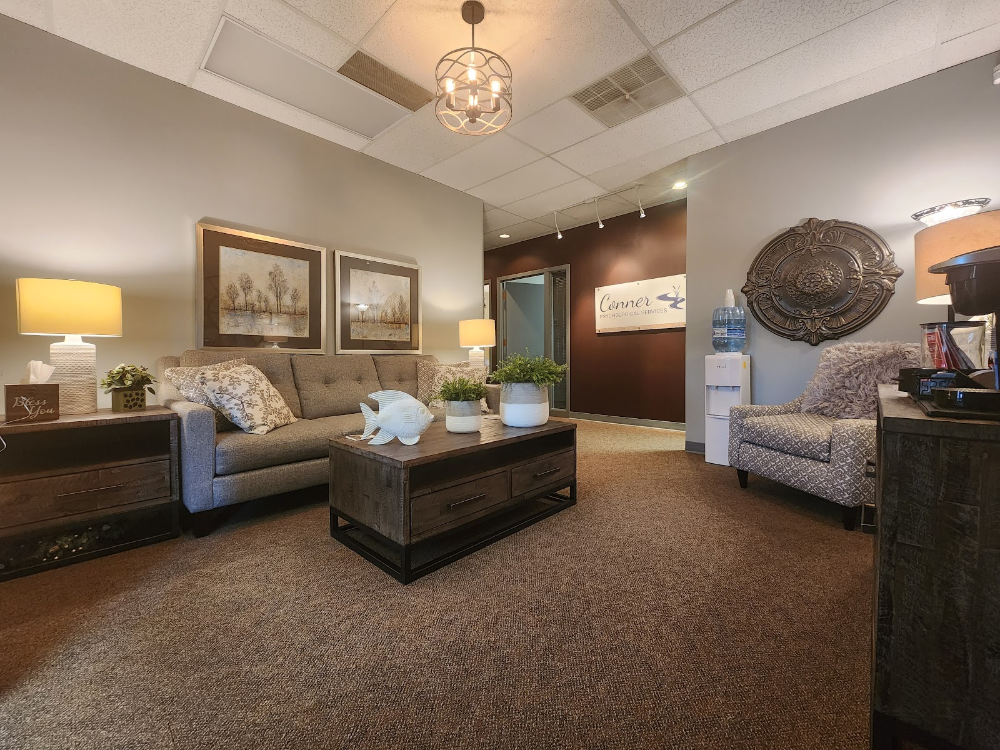
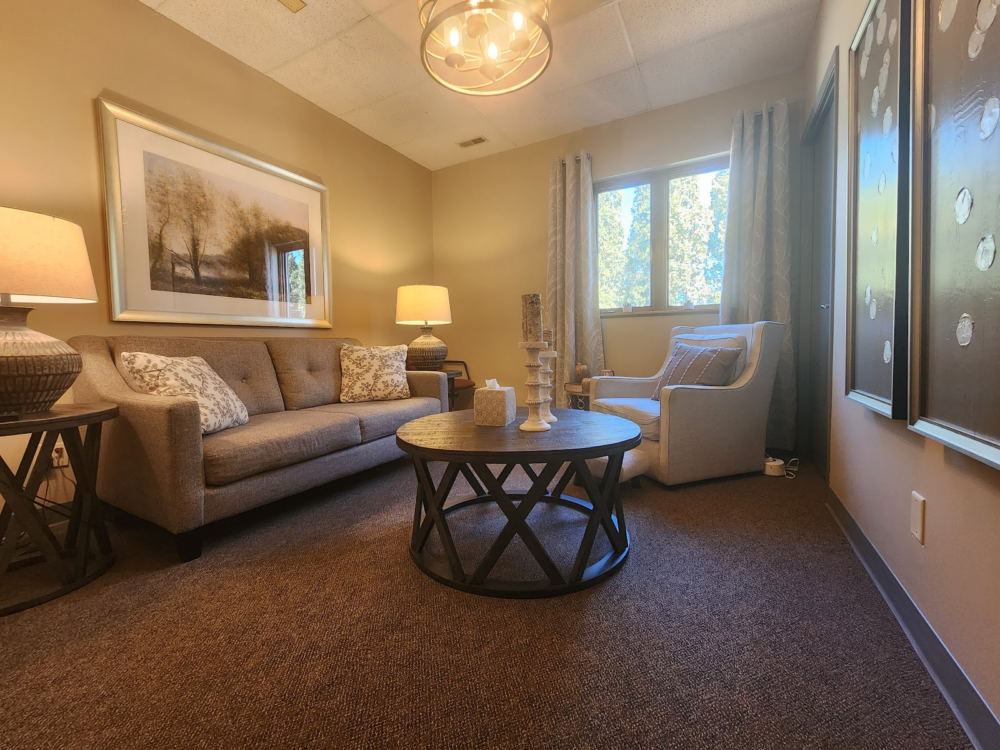

№ 01 Omaha, Nebraska · Public safety psychology
For those who protect and serve their communities.
A solo psychology practice specifically focused on law enforcement, firefighters, emergency dispatchers, correctional officers — and the departments that employ them. Assessment, consultation, and therapeutic services, with courtesy and professionalism.

№ 02 About the practice
A practice built around those who serve
After several years of specializing in psychological assessment, Dr. Conner has chosen to specifically focus on law enforcement psychology and related work with firefighters, emergency dispatchers, correctional officers, and others who work to protect and serve their communities. Public safety personnel can expect timely communication, sincere appreciation for their service, and individual attention to their needs.
· Consultation
· Therapyunder one roof

№ 03 What we provide
Assessment, consultation & therapy
Three categories of service for public safety applicants, current personnel, and the departments who employ them.
Psychological Assessment
- Pre-employment psychological assessment
- Promotional testing
- Specialty assignment testing
Therapeutic Services
- Therapeutic services for public safety personnel
- Debriefings after critical events
Consultation
- Consultation for public safety applicants
- Consultation for current public safety employees
- Direct consultation for departments & agencies
Traditional Psychology
- The traditional psychologist role of therapist & diagnostician
- Individual attention to each client's needs
Who we serve
Those who serve as First Responders have unusual and often challenging job expectations and experiences. They deserve timely communication, sincere appreciation for their service, and individual attention to their needs.
Dr. Conner · Conner Psychological Services
№ 04 A specialty within a specialty
Public Safety Psychology
A focused practice serving public safety personnel from before they ever wear the badge — through their careers, after critical events, and across every promotion and assignment in between.
Pre-Employment Screening
Careful psychological assessment required prior to entering public safety lines of work.
Promotional & Specialty Assignment Testing
Evaluation for advancement and specialized roles within public safety agencies.
Debriefings After Critical Events
Support for public safety employees following critical incidents.
Departmental Consultation
Direct service to agencies and departments as well as individual public safety employees.
№ 05 Meet your psychologist
Dr. Conner
Licensed Psychologist · Owner, Conner Psychological Services
After several years of specializing in psychological assessment, Dr. Conner has chosen to specifically focus on law enforcement psychology and related work with public safety personnel. Whether clients are being seen for assessment, consultation, or therapeutic services, they can expect courtesy, professionalism, and individual attention.
- i.Law enforcement & public safety psychology
- ii.Pre-employment, promotional & specialty assignment testing
- iii.Therapeutic services for first responders
- iv.Debriefings after critical events
- v.Consultation for public safety agencies
A quiet, private office tuned to first-responder work.
№ 06 Getting started
Reaching the practice
A short, direct path for applicants, employees, and departments alike.
Reach out
Call 402-871-4474 or email dr.conner@nebpsych.com. Departments and individual personnel are both welcome.
Identify the service
Pre-employment assessment, promotional or specialty testing, a debriefing after a critical event, ongoing therapy, or departmental consultation — Dr. Conner will confirm fit.
Schedule at the Omaha office
Sessions are held at 8710 Frederick St, Suite A101. Expect timely communication and individual attention from the first contact forward.
№ 07 Contact us
Reach Dr. Conner
For new and returning clients — and for departments coordinating services for their personnel.
Conner Psychological Services serves applicants, employees, and departments throughout the Omaha area.
8710 Frederick St — Suite A101.